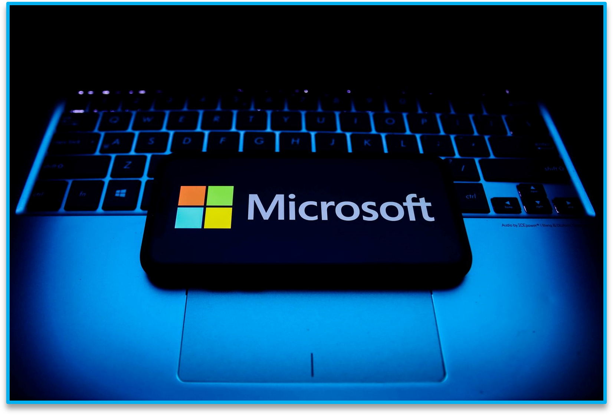
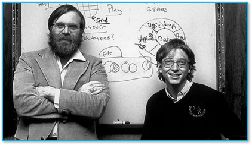

Microsoft Corporation (pronunciado en inglés [maikrosoft]) es una empresa tecnológica
multinacional con sede en Redmond, Washington, Estados Unidos. «Microsoft» es un acrónimo de microordenador
y software. La empresa desarrolla, fabrica, licencia y da soporte a ordenadores personales, servidores,
dispositivos electrónicos y servicios. Sus productos más conocidos son el sistema operativo Microsoft Windows,
el paquete Microsoft Office, los navegadores de Internet, Internet Explorer y Microsoft Edge. Sus productos
estrella son las consolas de videojuegos Xbox y la línea de dispositivos de pantalla táctil Microsoft Surface
en hardware. En 2016, era la mayor empresa de software del mundo por ingresoso y una de las más valiosas del
mercado global.
Estos a su vez trabajan con sistemas informáticos compatibles con sus dispositivos y tienen una infinidad de aplicaciones. Se puede acceder a todos sus servicios a través de la creación de una microsoft account (cuenta microsoft). Todos los demás programas y servicios pueden ser adquiridos a través la microsoft store, que es la tienda de microsoft online para adquirir todos estos productos con su licencia original. El origen del nombre proviene de la combinación del término micro, de “microcomputadora”, y de «soft», de software. En principio, se utilizó el nombre con un guión separando ambos términos, hasta finalmente llegar al nombre microsoft.
El rol de la empresa en Internet ha sido rotundo, sobre todo durante 1995 y 2006, ya que entre esos años fue persistente la exitosa presencia de su servicio más destacable hasta el momento: Microsoft  Messenger (MSN). Este servicio de correo y mensajería instantánea tomó rápidamente las primeras posiciones en el mercado. Sin embargo, no fue este el único rubro en el que la corporación incursionó, ya que participó en proyectos de revistas y televisión. Sin duda alguna, aunque hoy por hoy ya no se utilice con tanta frecuencia, Internet Explorer, también desarrollado por la empresa, marcó un antes y un después en la por la red. Por otro lado, se sumó a esto, casi al mismo tiempo, la adquisición de Hotmail, el cual lleva el nombre de Outlook con un diseño más novedoso. Un punto de inflexión en lo que a informática se refiere, cambio que también afectó positivamente la relación del usuario medio con Internet, fue la presentación de Windows 98, sistema operativo que continuó mutando hasta Windows 10, pasando por Windows ME y Windows XP, siendo éste último el sistema operativo más vendido de la historia.
Después de leer el 1 de enero de 1975, en la revista Popular Electronics, que la compañía MITS había creado el Altair 8800, Bill Gates llamó a los creadores del nuevo microordenador y ofreció la implementación del lenguaje de programación BASIC para el sistema.Después de desarrollarlo en las ocho  semanas siguientes junto con Allen, el intérprete funcionó en la versión parcial del programa y MITS acordó distribuir Altair BASIC. Gates dejó la Universidad Harvard y se trasladó a Albuquerque, Nuevo México, donde se encontraba el MITS, y fundó Microsoft allí. El nombre Microsoft (una palabra combinada de microordenador y software) fue usado por primera vez en una carta de Gates a Allen el 29 de noviembre 1975 y el 26 de noviembre de 1976 se convirtió en marca registrada. La primera oficina internacional de la compañía fue fundada el 1 de noviembre de 1978 en Japón, llamada ASCII Microsoft (ahora llamado Microsoft Japón). El 1 de enero de 1979 la compañía se trasladó de Albuquerque a Bellevue, Washington. Steve Ballmer inauguró la sede de la compañía el 11 de junio de 1980; este más adelante sustituiría a Gates como gerente. La compañía se reestructuró el 25 de junio de 1981 para convertirse en una compañía incorporada en el estado de Washington (de ahí cambió su nombre a “Microsoft Inc”). Como parte de la reestructuración, Bill Gates se convirtió en el presidente de la compañía y Paul Allen en vicepresidente ejecutivo.